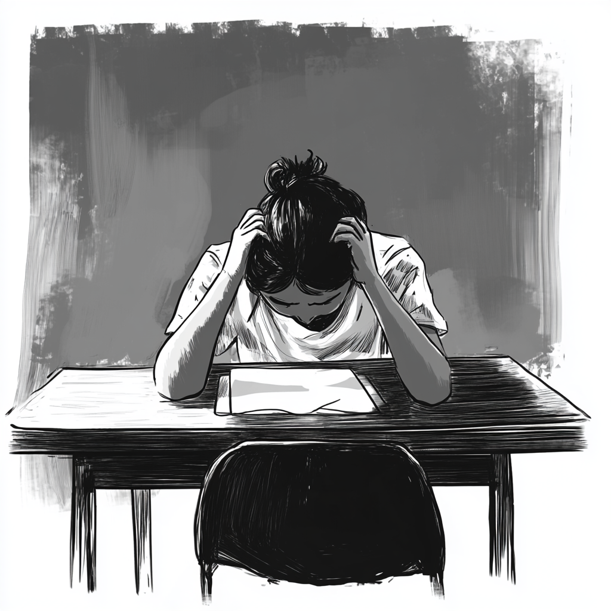
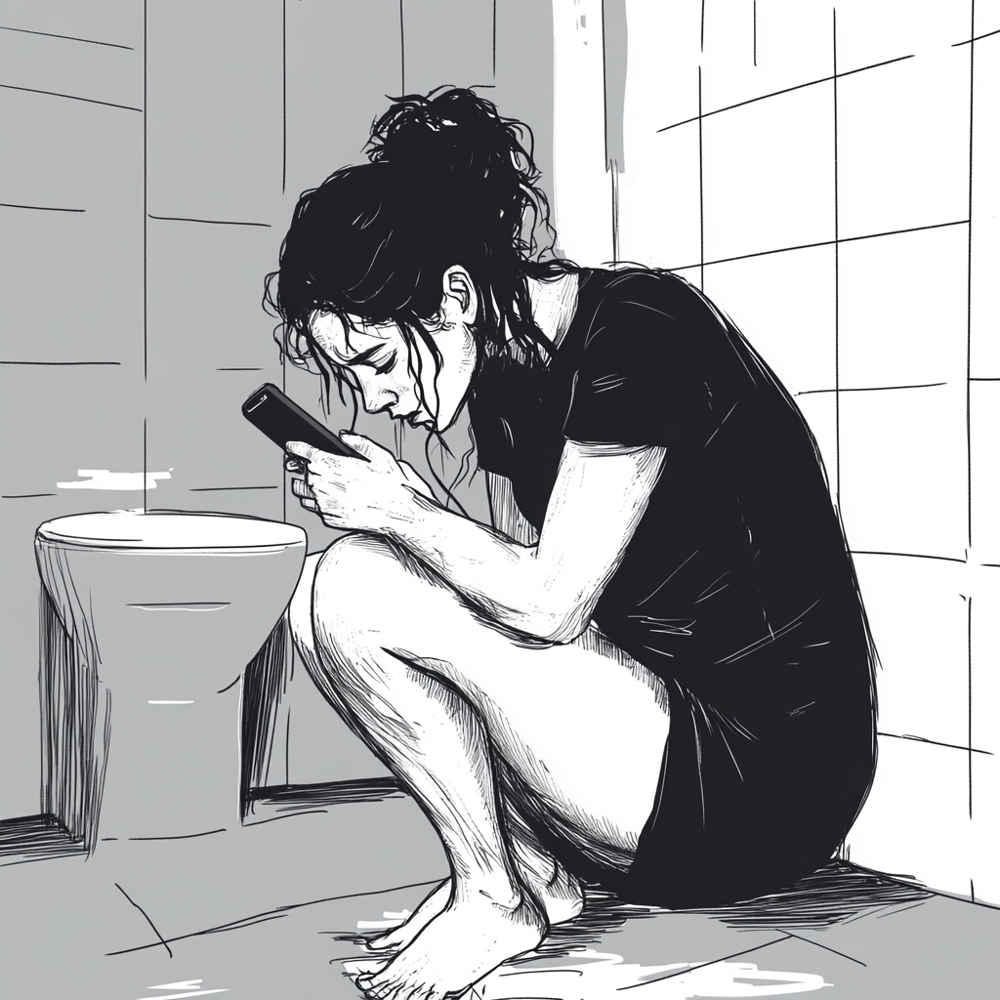

Mika felt out of place at first. Everyone around her was laughing, dancing, and drinking. Rotem handed her a cup.
"Come on, Mika, just one drink. You deserve to let loose!"
Mika hesitated but gave in. "Just one," she told herself
the night went on, the music got louder, and Mika found herself swept up in the energy. She drank more than she intended, and soon she was stumbling, laughing uncontrollably, and saying things she wouldn't normally say.
rotem and Tomer thought it was hilarious. They pulled out their phones and started recording her.
"Mika! Say that again, its going on my story!" Tomer laughed.
The next morning, Mika woke up with a pounding headache and flashes of the previous night
Her phone buzzed endlessly with notifications. She opened her social media and froze
Clips of her from the party were everywhere—her stumbling, slurred words, and silly comments had been posted for everyone to see
The comments were rolling in: "Didn’t think you had it in you, Mika! Wow, someone let loose for once.
Mika sat in class She felt a wave of embarrassment as she noticed a group of students whispering and glancing her way.
During the math test, her mind was blank. When she got her results back, the red "D" on her paper felt like a punch to the gut
After class, the teacher stopped Mika at the door
Mika," he said gently, "I need to talk to you for a moment. Can you stay?
Mika, I’m worried about you. Your test grade was low, and I’ve seen the video from the party. Is everything okay?
Mika froze, unsure how to respond.
Mistakes happen, but I want to help. I think it could be helpful for you to speak with the school psychologist. We can also create a plan to improve your grades if you’re willing to put in the work.What do you think?
Mika looked away, feeling embarrassed. "I’m fine. I don’t need help," she muttered.
The teacher sighed, "It’s okay to ask for help, Mika
But Mika quickly thanked him and left, her head low. She felt a sting of regret, unsure if she had made the right choice.
